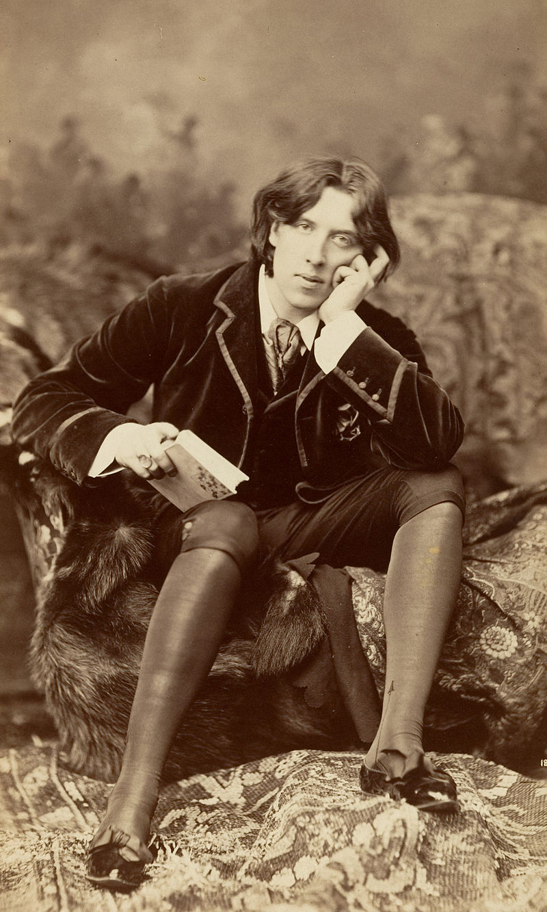

la vie de Oscar Wilde
Oscar Wilde, dont le nom complet est Oscar Fingal O'Flahertie Wills Wilde, est un écrivain irlandais, né à Dublin le 16 octobre 1854 et mort à Paris le 30 novembre 1900.Né dans la bourgeoisie irlandaise et protestante de Dublin, d’un père ophtalmologiste renommé et d’une mère poétesse, Oscar Wilde se distingue par un parcours scolaire brillant. Nourri de culture classique, couronné de prix au sein du Trinity College de Dublin, il intègre le Magdalene College de l'université d'Oxford, où il se construit un personnage d’esthète et de dandy, sous l’influence des préraphaélites et des théories de L'art pour l'art de Walter Pater, John Ruskin ou Whistler. À l’issue de ses études, Wilde s’installe à Londres, où il parvient à s'insérer dans la bonne société et les cercles cultivés, s’illustrant dans plusieurs genres littéraires. S’il publie, conformément aux exigences de l’esthétisme le plus pur, un volume de poésie, il ne néglige pas des activités moins considérées des cercles littéraires, mais plus lucratives : ainsi, il se fait le porte-parole de la nouvelle « Renaissance anglaise dans les arts » dans une série de conférences aux États-Unis et au Canada, puis exerce une prolifique activité de journaliste. Au tournant des années 1890, il précise sa théorie esthétique dans une série de dialogues et d’essais, et explore dans son roman Le Portrait de Dorian Gray (1890) les liens entretenus par la beauté, la décadence et la duplicité. Sa pièce Salomé (1891), rédigée en français à Paris l’année suivante, ne peut être jouée en Angleterre, faute d’avoir obtenu la licence d’autorisation, au motif qu’elle met en scène des personnages bibliques. Confronté une première fois aux rigueurs de la morale victorienne, Wilde enchaîne cependant avec quatre comédies de mœurs, qui font de lui l’un des dramaturges les plus en vue de Londres. Indissociables de son talent littéraire, sa personnalité hors du commun, le mordant de son esprit, le brillant de sa conversation et de ses costumes assuraient sa renommée.Au faîte de sa gloire, alors que sa pièce maîtresse L'Importance d'être Constant (1895) triomphe à Londres, Oscar Wilde poursuit le père de son amant Alfred Douglas pour diffamation, après que celui-ci a entrepris de faire scandale de son homosexualité. Après une série de trois procès retentissants, Wilde est condamné pour « grave immoralité » à deux ans de travaux forcés. Ruiné par ses différents procès, condamné à la banqueroute, il écrit en prison De Profundis, une longue lettre adressée à son amant dont la noirceur forme un contraste saisissant avec sa première philosophie du plaisir. Dès sa libération en mai 1897, il quitte définitivement la Grande-Bretagne pour la France. C’est dans ce pays d’accueil qu’il met un point final à son œuvre avec La Ballade de la geôle de Reading (1898), un long poème commémorant l’expérience éprouvante de la vie en prison. Il meurt à Paris en 1900, dans le dénuement à l'âge de quarante-six ans.